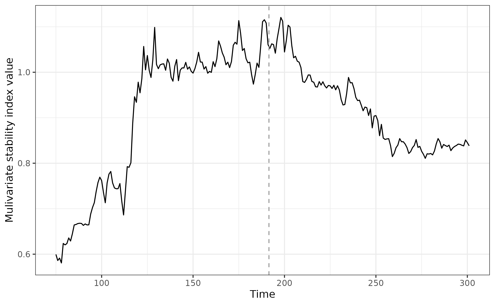

Alternative Resilience Measures
Duncan O’Brien
2023-04-19
Source:vignettes/resilience_measures.Rmd
resilience_measures.RmdAbout this tutorial
This tutorial introduces resilience metrics distinct from critical slowing down based/Early Warning Signal indicators. The primary benefit of this collection of techniques is that they are both model and equilibrium free; they don’t assume a system is a equilibrium.
EWSmethods provides three distinct approaches to
quantifying system resilience. The tutorial will go through each in turn
and give examples of their usage.
Greater detail on each function can be found at the Reference page.
Getting started
set.seed(123) #to ensure reproducible data
library(EWSmethods)
library(ggplot2) #for plottingWe will use the same multi-species community described in the Performing Early Warning Signal Assessments tutorial.
Briefly, the data object "simTransComms" contains three
replicate datasets of a simulated five species community that has been
driven to transition by the introduction of an invasive species
(following Dakos 2018). The strength of impact by the invasive species
gradually increases through time between t100 and t200
at which point it is held constant.
Lets load the data in:
data("simTransComms")and plot one of the communities. The vertical dashed line represents a sudden transition due to the invasive species.
matplot(simTransComms$community1[,3:7], type = "l", xlab = "Time", ylab = "Density", main = "Transitioning five species community")
abline(v=simTransComms$community1$inflection_pt,col = "grey60", lty = "dashed")Now we have a system/community that is experiencing some form of stress and we can apply univariate or multivariate resilience measures to give us an idea of how the system is responding to that stress.
1) Index of Variability
The simplest measure provided by EWSmethods is the
multivariate index of variability (MVI - Brock and Carpenter, 2006). The
MVI is represented by the square root of the dominant eigenvalue of the
covariance matrix of all species.
Usage
Provide the community data (first column being time, the remainder
being species values) to the mvi() function, and specify a
winsize to calculate the index over. The default
winsize is 50% the total length of the time series, but we
have set winsize = 25 to ensure that the periods before and
after the sudden change in are distinct.
egMVI <- mvi(data = simTransComms$community1[,2:7], winsize = 25)If we then plot the index, we can see that before and after the ‘inflection point’ (where the community goes through a transition) there are clear differences in stability.
What is also apparent is that the MVI begins to increase prior to the sudden change, albeit only slightly.
mvi_plot_data <- merge(simTransComms$community1,as.data.frame(egMVI),by="time") # combine the mvi data with the raw time series
ggplot(mvi_plot_data,aes(x = time, y = mvi)) + geom_line() + geom_vline(xintercept = mvi_plot_data$inflection_pt,col = "grey60", linetype = "dashed") + theme_bw() + xlab("Time") + ylab("MVI value")2) S-map Jacobians
The cutting edge of resilience metrics belong to approaches which exploit empirical dynamic modelling (EDM - Sugihara et al. 2012). EDM exploits Takens’ embedding theorem (Takens 1981) which suggests that an underlying latent system/attractor manifold can be reconstructed from one or more related time series. By lag embedding two or more time series, their interaction strength (or causal strength) can be estimated.
This approach consequently requires no knowledge of the underlying equations nor numerical estimates of the system’s equilibrium state as the local Jacobians are directly estimated from the time series. The local Lyapunov stability is calculated as the dominant eigenvalue of the estimated Jacobian matrix.
Jacobians consist of the first-order partial derivatives for a multivariate function and are critical to resilience quantification. They are so important because they allow us to differentiate two or more functions with respect to two or more variables, something not achievable using standard derivation. Jacobian matrices therefore provide insight in to how each variable (or species) in a system’s master equation will change in the successive time step; if we know the true Jacobian, we know the future.
EWSmethods provides access to two forms of s-map
estimated Jacobians, one for univariate data (following Grziwotz et
al. 2023) and another for multivariate data (following Ushio et
al. 2018).
Interpretation
A local Lyapunov stability value (the returned index value) of less
than 1 indicates that the community tends to recover faster
from perturbations, assuming the interspecific interaction strengths and
self-regulation effects are constant. Therefore, 1
represents a threshold above which the system is unstable and below
which the system is stable. However, any persistent increase in Jacobian
index is of concern for resilience loss.
Usage - Univariate
The univariate form of Jacobian estimated stability is performed
using the uniJI() function. Following Grziwotz et
al. (2023), uniJI() estimates the strength of time
embedded relationship between a univariate time series and lagged forms
of itself.
In uniJI(), we again provide community data but for a
single species (first column being time, focal species the second). We
must also provide a winsize, embedding dimension
(E) and tau. E and
tau are complicated to parameterise and requires a degree
of exploration. Initially, we suggest E to be in the range
1 to 6, and tau in the range 3 - 12, but refer readers to
the excellent introduction by Chang et al. (2017) for further
details.
eg_uniJI <- uniJI(data = simTransComms$community1[,2:3], winsize = 25, E = 3)Plotting the index for this species, we observe a loss of stability prior to the transition and dramatic overcompensation following it.
uniJI_plot_data <- merge(simTransComms$community1,eg_uniJI,by="time") # combine the mvi data with the raw time series
ggplot(uniJI_plot_data,aes(x = time, y = smap_J)) + geom_line() + geom_vline(xintercept = uniJI_plot_data$inflection_pt,col = "grey60", linetype = "dashed") + theme_bw() + xlab("Time") + ylab("Univariate stability index value")Lets repeat this for all species to give us an overall idea of system resilience.
all_spp_uniJI <- sapply(grep("spp_",colnames(simTransComms$community1)),FUN = function(x){
if(x == 3){
uniJI(data = simTransComms$community1[,c(2,x)], winsize = 25, E = 3)
}else{
uniJI(data = simTransComms$community1[,c(2,x)], winsize = 25, E = 3)[,2]
}
}) # for each species, calculate the univariate stability index
all_spp_uniJI <- do.call("cbind",all_spp_uniJI) # merge the list in to a data.frame
names(all_spp_uniJI) <- c("time",paste("spp",1:5,sep="_")) # and rename missing columns
all_spp_plot_data <- merge(tidyr::pivot_longer(all_spp_uniJI,cols = -time,names_to = "species",values_to = "smap_J"), simTransComms$community1[,c("time","inflection_pt")], by = "time") #pivot_longer for easier plotting and merge with the inflection point data
ggplot(all_spp_plot_data,aes(x = time, y = smap_J)) + geom_line(aes(col=species)) + geom_vline(xintercept = all_spp_plot_data$inflection_pt,col = "grey60", linetype = "dashed") + theme_bw() + xlab("Time") + ylab("Univariate stability index value") + scale_colour_manual(values = c("black","#6886c4","#bfbd3d","#69c756","#e281fe")) + facet_wrap(~species)This approach highlights how each species responds uniquely and can help identify the most sensitive species. I.e which are possible indicator species.
Usage - Multivariate
Conversely, to compute the multivariate form of Jacobian estimation,
we can use the function multiJI(). multiJI()
fits a local linear model between all species which predicts the
system’s future value from the reconstructed state-space. The resulting
coefficients of this model are therefore a proxy for the interaction
strength between species.
Note E and tau are not required for the
EWSmethods form of index. For E, the number of
species themselves are used for embedding, though this does limit the
minimum length of time series to being the number of species. Instead,
theta is impactful, and represents the tuning parameter for
forecasts (if not provided, multiJI() identifies the
optimal theta using root mean square error). Conversely,
tau is held constant at -1 as there is no self
embedding due to the index being a multivariate measure.
⚠️ Warning! -
multiJI()is significantly slower than any of the other resilience indicators provided byEWSMethodsdue to the multiple cross referencing required between species. Therefore increasing the number of species and length of time series (or decreasingwinsize) can dramatically increase computation time.
eg_multiJI <- multiJI(data = simTransComms$community1[,2:7], winsize = 25)Plotting the index for this species, we observe a loss of stability
significantly prior to the transition and much earlier than the
uniJI() estimated index.
multiJI_plot_data <- merge(simTransComms$community1,eg_multiJI,by="time") # combine the mvi data with the raw time series
ggplot(multiJI_plot_data,aes(x = time, y = smap_J)) + geom_line() + geom_vline(xintercept = multiJI_plot_data$inflection_pt,col = "grey60", linetype = "dashed") + theme_bw() + xlab("Time") + ylab("Mulivariate stability index value")
Caveats
Both s-map methods are sensitive to the choice of E and
tau. Additionally, in seasonal/cyclical data, the shared
cycles or seasons across species can artificially inflate estimates of
causality and relatedness. In these circumstances, it is recommended to
detrend data prior to estimating these resilience metrics (Ushio et
al. 2018). EWSmethods provides the capability to
detrend and deaseason data via the functions detrend_ts()
and deseason_ts() respectively. Similarly, it is sensible
to scale/normalise all time series to be of equivalent magnitude to aid
model fitting. A scale = TRUE argument is present in both
uniJI() and multiJI() to achieve this.
Additionally, the two approaches require time series with no extended
period of unchanging values (specifically a period equal to or longer
than the window size). If uniJI() or multiJI()
detect such a circumstance, the current iteration returns
NA and the time series is removed respectively. For
multiJI() if there are more species than data points in the
window, then the index will fail. This is due to a multivariate index
calculated across n species time delays up to lag
n-1, which may not be possible if the time series are
short. In this circumstance, we recommend sampling a subset of species,
either randomly or the most abundance species (those less likely to have
a period of unchanging values).
3) Fisher Information
Fisher Information (FI) attempts to estimate the amount of
information data can provide on an unmeasured parameter (Fisher and
Russell 1922). It consequently has been applied as an indicator of
system dynamics and stability (Ahmad et al. 2016).
EWSmethods provides a simplified discrete time form of
Fisher and Russel (1922)’s mathematic proof following Karunanithi et
al. (2008):
\[\begin{equation} FI\approx 4 \sum_{i=1}^{m}[q_i-q_{(i+1)}]^2 \end{equation}\]
where \(q_{i}^2\) is the amplitude of the probability of observing states of the system at time window \(i\) and \(m\) is the number of possible ‘states’. Possible states are defining by comparing the difference between temporally adjacent data windows to a reference ‘uncertainty’. If the absolute difference in density is less than the reference deviation for all variables (i.e. species densities), then the windows are binned in to the same ‘state’.
Usage
Provide the community data (first column being time, the remainder
being species values) to the FI() function, specify a
winsize to calculate the index over, and a size-of-states
vector (sost). The default winsize is 50% the
total length of the time series, and sost is typically
suggested to be the standard deviation of each species across the entire
time series multiplied by 2 (Karunanithi et al. 2008).
winspace indicates the number of data points to slide the
rolling window along (1 is standard) and TL is
the ‘tightening level’. TL is the percentage of points
shared between states and allows the algorithm to classify data points
to/from the same state.
eg.sost <- t(apply(simTransComms$community1[,3:7], MARGIN = 2, FUN = sd)) # define size-of-states using the standard deviation of each species separately. Must be wide format hence t()
egFI <- FI(data = simTransComms$community1[,2:7], sost = eg.sost, winsize = 25,winspace = 1, TL = 90)$FIIf we again plot the index, we can see that before and after the ‘inflection point’ (where the community goes through a transition) there are clear differences in stability.
What is also apparent, is that the FI begins to decrease prior to the sudden change, and stability only returns after an extended period post constant stress (stress is constant from t200 onward).
fi_plot_data <- merge(simTransComms$community1,egFI,by="time") # combine the mvi data with the raw time series
ggplot(fi_plot_data,aes(x = time, y = FI)) + geom_line() + geom_vline(xintercept = fi_plot_data$inflection_pt,col = "grey60", linetype = "dashed") + theme_bw() + xlab("Time") + ylab("Fisher Information value")References
Ahmad N., Derrible S., Eason T., and Cabezas H. (2016) Using Fisher information to track stability in multivariate systems. Royal Society Open Science. 3, 11, 160582. doi: 10.1098/rsos.160582
Brock, W., & Carpenter, S. (2006). Variance as a leading indicator of regime shift in ecosystem services. Ecology and Society, 11, 9. http://www.ecologyandsociety.org/vol11/iss2/art9/
Chang, C.-W., Ushio, M., and Hsieh, C.-h. (2017). Empirical Dynamic Modeling for beginners. Ecological Research, 32,6,785–796. doi:10.1007/s11284-017-1469-9
Fisher, R. A., & Russell, E. J. (1922). On the mathematical foundations of theoretical statistics. Philosophical Transactions of the Royal Society of London Series A: Containing Papers of a Mathematical or Physical Character, 222, 309–368. doi:10.1098/rsta.1922.0009
Grziwotz, F., Chang, C.-W., Dakos, V., et al. (2023). Anticipating the occurrence and type of critical transitions. Science Advances, 9. doi:10.1126/sciadv.abq4558
Karunanithi, A. T., Cabezas, H., Frieden, et al. (2008). Detection and assessment of ecosystem regime shifts from Fisher Information. Ecology and Society, 13, 1. https://www.jstor.org/stable/26267924
Sugihara, G., May, R., Ye, H., Hsieh, C., Deyle, E., Fogarty, M., & Munch, S. (2012). Detecting causality in complex ecosystems. Science, 338, 496–500. doi:10.1126/science.1227079
Takens, F. (1981). Detecting strange attractors in turbulence. Dynamical Systems and Turbulence, Warwick 1980. Ed. by D. Rand and L.-S. Young. Berlin, Heidelberg: Springer Berlin Heidelberg, pp. 366–381
Ushio, M., Hsieh, Ch., Masuda, R. et al. (2018) Fluctuating interaction network and time-varying stability of a natural fish community. Nature, 554, 360–363. doi:10.1038/nature25504